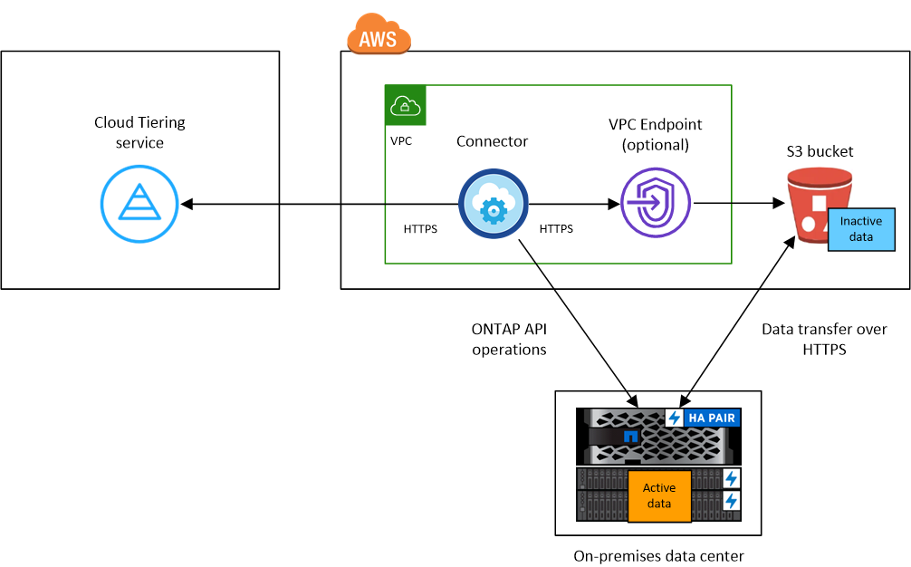

Request doc changes
Request doc changes Edit this page
Edit this page Learn how to contribute
Learn how to contributeTiering data from on-premises ONTAP clusters to Amazon S3
Contributors
Free space on your on-prem ONTAP clusters by tiering inactive data to Amazon S3.
Quick start
Get started quickly by following these steps, or scroll down to the remaining sections for full details.
 Prepare to tier data to Amazon S3
Prepare to tier data to Amazon S3You need the following:
-
An on-prem ONTAP cluster that’s running ONTAP 9.2 or later and has an HTTPS connection to Amazon S3. Learn how to discover a cluster.
-
An AWS account that has an access key and the required permissions so the ONTAP cluster can tier inactive data in and out of S3.
-
A Connector installed in an AWS VPC or on your premises.
-
Networking for the Connector that enables an outbound HTTPS connection to the ONTAP cluster, to S3 storage, and to the Cloud Tiering service.
 Set up tiering
Set up tieringIn Cloud Manager, select an on-prem working environment, click Enable for the Tiering service, and follow the prompts to tier data to Amazon S3.
 Set up licensing
Set up licensingAfter your free trial ends, pay for Cloud Tiering through a pay-as-you-go subscription, an ONTAP Cloud Tiering BYOL license, or a combination of both:
-
To subscribe from the AWS Marketplace, go to the Cloud Manager Marketplace offering, click Subscribe, and then follow the prompts.
-
To pay using a Cloud Tiering BYOL license, contact us if you need to purchase one, and then add it to your account from the Cloud Manager Digital Wallet.
Requirements
Verify support for your ONTAP cluster, set up your networking, and prepare your object storage.
The following image shows each component and the connections that you need to prepare between them:


|
Communication between a Connector and S3 is for object storage setup only. The Connector can reside on your premises, instead of in the cloud. |
Preparing your ONTAP clusters
Your ONTAP clusters must meet the following requirements when tiering data to Amazon S3.
- Supported ONTAP platforms
-
-
When using ONTAP 9.8 and later: You can tier data from AFF systems, or FAS systems with all-SSD aggregates or all-HDD aggregates.
-
When using ONTAP 9.7 and earlier: You can tier data from AFF systems, or FAS systems with all-SSD aggregates.
-
- Supported ONTAP version
-
ONTAP 9.2 or later
- Cluster networking requirements
-
-
The ONTAP cluster initiates an HTTPS connection over port 443 to Amazon S3.
ONTAP reads and writes data to and from object storage. The object storage never initiates, it just responds.
Although AWS Direct Connect provides better performance and lower data transfer charges, it’s not required between the ONTAP cluster and S3. But doing so is the recommended best practice.
-
An inbound connection is required from the Connector, which can reside in an AWS VPC or on your premises.
A connection between the cluster and the Cloud Tiering service is not required.
-
An intercluster LIF is required on each ONTAP node that hosts the volumes you want to tier. The LIF must be associated with the IPspace that ONTAP should use to connect to object storage.
-
- Supported volumes and aggregates
-
The total number of volumes that Cloud Tiering can tier might be less than the number of volumes on your ONTAP system. That’s because volumes can’t be tiered from some aggregates. Refer to ONTAP documentation for functionality or features not supported by FabricPool.
|
|
Cloud Tiering supports FlexGroup volumes starting with ONTAP 9.5. Setup works the same as any other volume. |
Discovering an ONTAP cluster
You need to create an on-prem ONTAP working environment in Cloud Manager before you can start tiering cold data.
Creating or switching Connectors
A Connector is required to tier data to the cloud. When tiering data to AWS S3, you can use a Connector that’s in an AWS VPC or on your premises. You’ll either need to create a new Connector or make sure that the currently selected Connector resides in AWS or on-prem.
Preparing networking for the Connector
Ensure that the Connector has the required networking connections. A Connector can be installed on-prem or in AWS.
-
Ensure that the network where the Connector is installed enables the following connections:
-
An outbound internet connection to the Cloud Tiering service over port 443 (HTTPS)
-
An HTTPS connection over port 443 to S3
-
An HTTPS connection over port 443 to your ONTAP cluster management LIF
-
-
If needed, enable a VPC Endpoint to S3.
A VPC Endpoint to S3 is recommended if you have a Direct Connect or VPN connection from your ONTAP cluster to the VPC and you want communication between the Connector and S3 to stay in your AWS internal network.
Preparing Amazon S3
When you set up data tiering to a new cluster, you’re prompted to create an S3 bucket or to select an existing S3 bucket in the AWS account where the Connector is set up. The AWS account must have permissions and an access key that you can enter in Cloud Tiering. The ONTAP cluster uses the access key to tier data in and out of S3.
The S3 bucket must be in a region that supports Cloud Tiering.
|
|
If you are planning to configure Cloud Tiering to use a lower cost storage class where your tiered data will transition to after a certain number of days, you must not select any life cycle rules when setting up the bucket in your AWS account. Cloud Tiering manages the life cycle transitions. |
-
Provide the following permissions to the IAM user:
"s3:ListAllMyBuckets", "s3:ListBucket", "s3:GetBucketLocation", "s3:GetObject", "s3:PutObject", "s3:DeleteObject" -
Create or locate an access key.
Cloud Tiering passes the access key on to the ONTAP cluster. The credentials are not stored in the Cloud Tiering service.
Tiering inactive data from your first cluster to Amazon S3
After you prepare your AWS environment, start tiering inactive data from your first cluster.
-
An AWS access key for an IAM user who has the required S3 permissions.
-
Select an on-prem cluster.
-
Click Enable for the Tiering service.

-
Choose your provider: This page appears only when using an on-prem Connector. Select Amazon Web Services and click Continue.
-
Complete the steps on the Tiering Setup page:
-
S3 Bucket: Add a new S3 bucket or select an existing S3 bucket that starts with the prefix fabric-pool and click Continue.
When using an on-prem Connector, you must enter the AWS Account ID that provides access to the existing S3 bucket or new S3 bucket that will be created.
The fabric-pool prefix is required because the IAM policy for the Connector enables the instance to perform S3 actions on buckets named with that exact prefix. For example, you could name the S3 bucket fabric-pool-AFF1, where AFF1 is the name of the cluster.
-
Storage Class Life Cycle: Cloud Tiering manages the life cycle transitions of your tiered data. Data starts in the Standard class, but you can create a rule to move the data to another class after a certain number of days.
Select the S3 storage class that you want to transition the tiered data to and the number of days before the data will be moved, and click Continue. For example, the screenshot below shows that tiered data is moved from the Standard class to the Standard-IA class after 45 days in object storage.
If you choose Keep data in this storage class, then the data remains in the Standard storage class and no rules are applied. See supported storage classes.

Note that the life cycle rule is applied to all objects in the selected bucket.
-
Credentials: Enter the access key ID and secret key for an IAM user who has the required S3 permissions, and click Continue.
The IAM user must be in the same AWS account as the bucket that you selected or created on the S3 Bucket page.
-
Cluster Network: Select the IPspace that ONTAP should use to connect to object storage, and click Continue.
Selecting the correct IPspace ensures that Cloud Tiering can set up a connection from ONTAP to your cloud provider’s object storage.
-
-
On the Tier Volumes page, select the volumes that you want to configure tiering for and launch the Tiering Policy page:
-
To select all volumes, check the box in the title row (
 ) and click Configure volumes.
) and click Configure volumes. -
To select multiple volumes, check the box for each volume (
 ) and click Configure volumes.
) and click Configure volumes. -
To select a single volume, click the row (or
 icon) for the volume.
icon) for the volume.
-
-
In the Tiering Policy dialog, select a tiering policy, optionally adjust the cooling days for the selected volumes, and click Apply.

You’ve successfully set up data tiering from volumes on the cluster to S3 object storage.
You can also add additional clusters or review information about the active and inactive data on the cluster. For details, see Managing data tiering from your clusters.